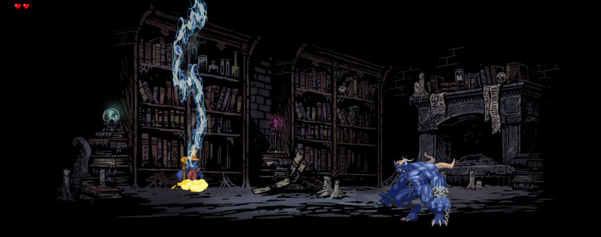
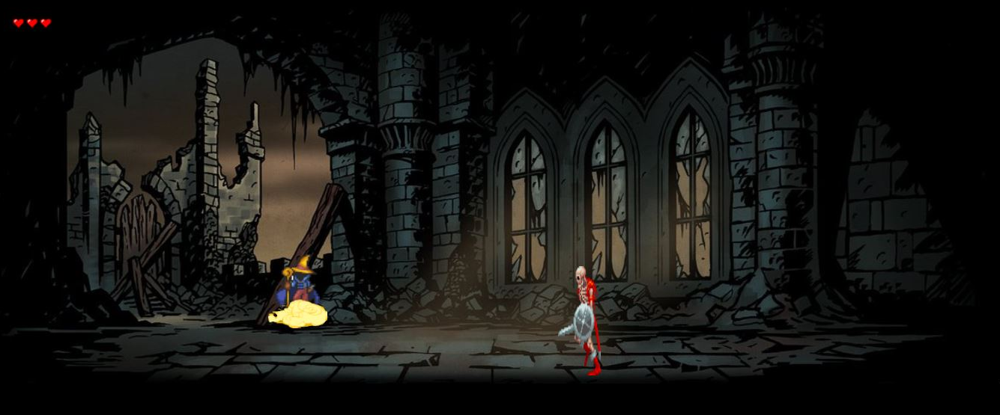
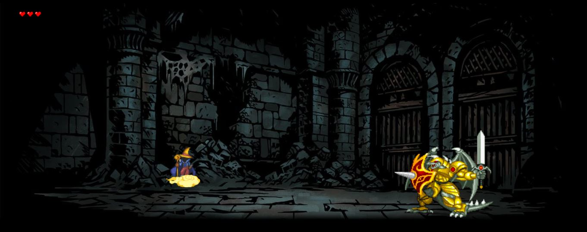

Construct é uma ferramente que é usada especificamente para fazer jogosç. Porém é uma ferramente para iniciantes, por ser assim, é bem simples.
"Black Mage Reborn" é o nome dado ao projeto feito pelo grupo SlendyTubbies. Esse jogo de plataforma consiste em três fases.
A fase 1 é um monstro que seu ataque principal é um raio.

A fase 2 possui um esqueleto como boss e o ataque pricipal é uma espadada.

A fase 3 é o boss final, sendo um dragão, e o ataque principal é uma espadada e uma asada.
